1 Einführung
1.1 Gliederung Teil Geoelektrik
- Grundgleichungen und elektrische Felder
- Petrophysikalische Grundlagen
- Anordnungen, Profilmessungen und Sensitivitäten
- Widerstandstiefensondierung
- 2D-Geoelektrik, Modellierung und Inversion
- 3D-Geoelektrik und crosshole-ERT
- Prozessmonitoring und Timelapse-Verfahren
- Induzierte Polarisation im Zeit- und Frequenzbereich
1.2 Gliederung Teil Elektromagnetik
- Grundlagen der Geoelektromagnetik
- Magnetotellurik
- CSEM-Methoden im Frequenzbereich
- Transientelektromagnetik
- Gemeinsame Inversion
- Nuklearmagnetische Resonanz
1.3 Empfohlene Lehrbücher
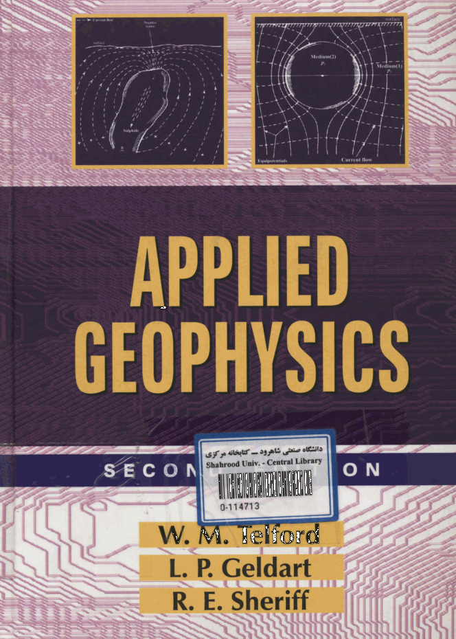


1.4 Literatur
- Knödel/Krummel/Lange.: Geophysik, Handbuch zur Erkundung des Untergrundes von Deponien und Altlasten, Springer frei über UB
- Everett (2013): Near Surface Applied Geophysics, Cambridge
- Binley (2015): Tools and Techniques: Electrical Methods, in Treatise on Geophysics, vol 11, 2nd ed., Elsevier, doi:10.1016/B978-0-444-53802-4.00192-5
- Burger et al. (2023): Introduction to Applied Geophysics - Exploring the Shallow Subsurface, Cambridge
1.5 Lernpyramide
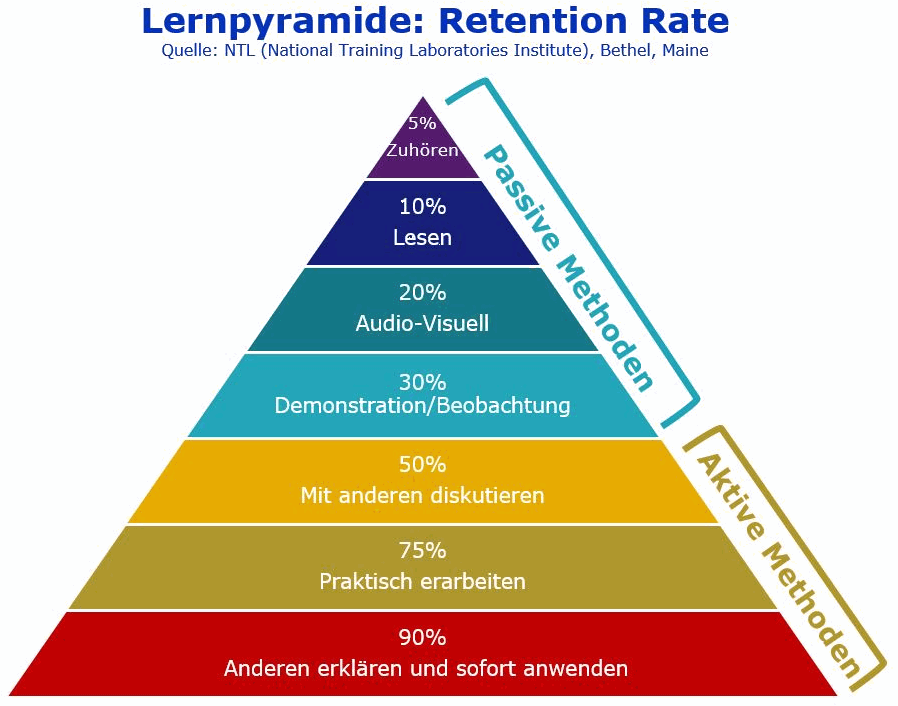
- Vorlesung und Scripte
- Notebooks zum Spielen
- Übungen
- praktische Messungen
- gemeinsame Auswertung
2 Einführung
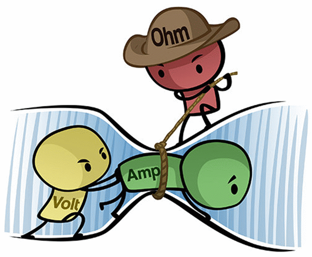
2.1 Elektromagnetische Größen
- magn. Feldstärke \(H\) [A/m]
- magn. Flussdichte \(B\) [Vs/m²] \(B=\mu H\) (oft “Magnetfeld”)
- magn. Permeabilität \(\mu\) [Vs/Am] \(\mu=\mu_0\mu_r\) , \(\mu_0\)=4\(\pi\) 1e-7Vs/Am
- mag. Suszeptibilität \(\chi_m=\mu_r\)-1
- magn. Fluss \(\Phi\) [Vs]
- spez. el. Widerstand \(\rho\) [\(\Omega\)m]
- elektr. Feldstärke \(E\) [V/m]
- dielektr. Verschiebung \(D\) [As/m²] \(D=\epsilon E\) (Hilfsfeld)
- elektr. Permittivität \(\epsilon\) [As/Vm] \(\epsilon=\epsilon_0\epsilon_r\) , \(\epsilon_0\)=8.854e-12As/Vm
- el. Suszeptibilität \(\chi_e=\epsilon_r\)-1
- elektr. Stromdichte \(j\) [A/m²]
- el. Leitfähigkeit \(\sigma\) [S/m]
2.2 Maxwell-Gleichungen
\[ \curl\vb E = -\pdv{\vb B}{t} \]
\[ \curl \vb H = \pdv{\vb D}{t} + \vb j \]

2.3 Maxwell - Quellen und Material
Ladungsträger erzeugen eine elektrische Verschiebung \[\div \vb D = \varrho\]
Das Magnetfeld ist frei von Quellen und Senken \[\div \vb B = 0\]
Materialgleichungen: \(\vb B=\mu\vb H\), \(\vb D=\epsilon\vb E\), \(\vb j=\sigma\vb E\)
2.4 Amperesches Gesetz in der Geophysik
\[ \curl \vb H = \pdv{\vb D}{t} + \vb j \]
- Wellenausbreitung \(\curl\vb H=\pdv*{\vb D}{t}\): Georadar
- Induktion \(\curl\vb H=\vb j\), \(\curl\vb E=-\pdv*{\vb B}{t}\)
Magnetotellurik, EMI in Zeit- und Frequenzbereich - Magnetostatik \(\curl\vb H=\vb j\), \(\curl\vb E=0\)
2.5 Näherung und Methoden
\[ \curl \vb H = \pdv{\vb D}{t} + \vb j \qquad \curl\vb E = -\pdv{\vb B}{t} \]
| Vorgänge/Felder | \(\curl\vb H\) | \(\curl\vb E\) | Methoden |
|---|---|---|---|
| Stationär | \(\vb j\) | 0 | Geoelektrik |
| Quasistationär | \(\vb j\) | \(-\pdv*{\vb B}{t}\) | Induktion |
| Wellenvorgänge | \(\pdv*{\vb D}{t}+\vb j\) | \(-\pdv*{\vb B}{t}\) | Georadar |
2.6 Elektrische Leitfähigkeit

- Länge \(L\), Querschnitt \(A\)
- Spannung \(U\) [V], Stromstärke \(I\) [A]
- Ohmscher Widerstand \(R\)=\(U\)/\(I\) [\(\Omega\)]
- Stromdichte \(j\)=\(I\)/\(A\) [A/m²]
- Elektr. Feld \(E\)=\(U\)/\(L\) [V/m]
- Ohmsches Gesetz
\(j=\sigma E\) (Leitfähigkeit \(\sigma\) [A/Vm])
\(\Rightarrow \rho=1/\sigma=E/j\) [\(\Omega\)m] spezifischer Widerstand
\(\Rightarrow \rho = \frac{U/L}{I/A}=\frac{U}{I}\frac{A}{L}=R\cdot k\) Konfigurations-Faktor \(k\) [m]
2.7 Spezifischer Widerstand (Knödel, 2005)
25 Dekaden:
- Diamant: 1e18 \(\Omega\)m
- Kupfer: 1e-7 \(\Omega\)m
abhängig von:
- Wassergehalt
- Fluidleitfähigkeit
- Tonanteil

3 Anwendung
- Ingenieurgeophysik (Festgestein, Hohlräume, Bäume/Wurzeln)
- Hydrogeologie (Aquifer-Architektur, Kontaminationen)
- Salzwasser-Intrusion in Grundwasser-Aquifere
- Geologisch/tektonische Untersuchungen (Störungen)
- Archäologie (Fundamente, Hütten und Schlacken)
- Landwirtschaft (Feuchtigkeit und Tonanteil)
- Georisiken (Hangrutschungen, Verkarstung)
- Prozessmonitoring (Wasser- und Stoff-Transport)
3.1 Kleinskalig (Martin&Günther, 2013)
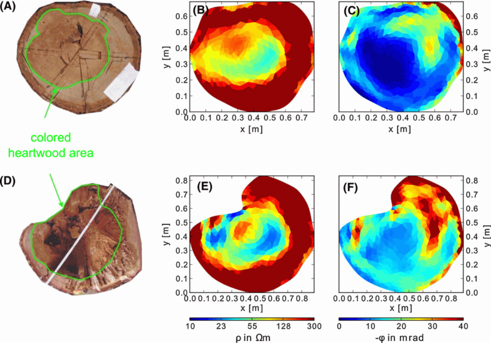
3.2 Mittelskalig: Geologie
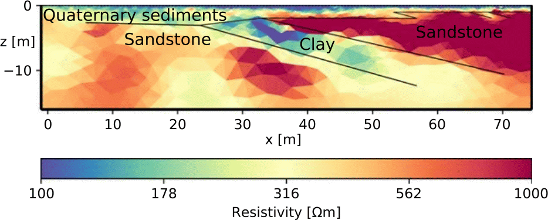
3.3 Großskalig: Geologie
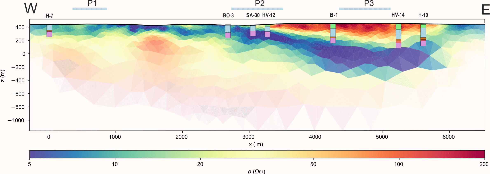
3.4 Salzwasser-Intrusion von Süßwasseraquiferen
 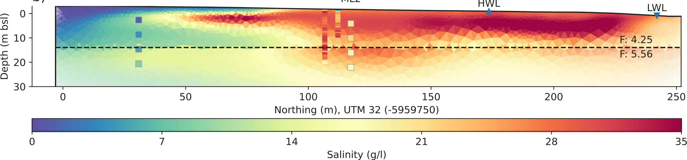
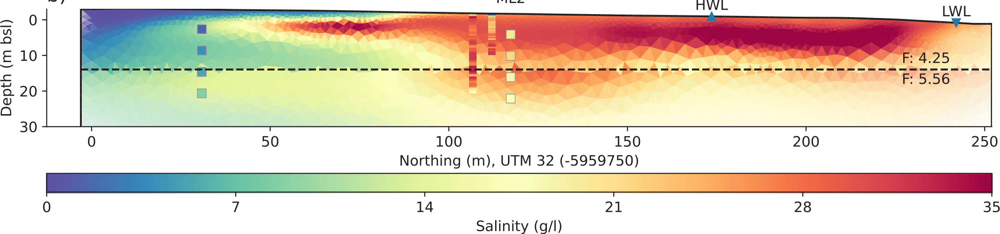
3.5 Hydrogeologie (Hübner et al., 2015)
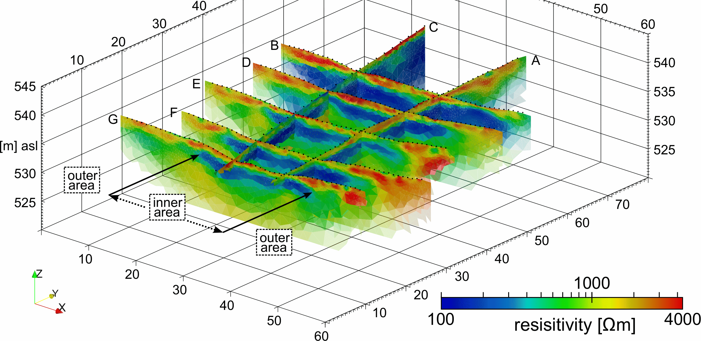
3.6 Untersuchung von Halden (Günther et al., 2006)

4 2D-Geoelektrik
- Kombination aus Kartierung und Sondierung, automatisiert mit Relais
- Entwicklung von Multi-Elektroden-Apparaturen (1990er Jahre)
- Hersteller weltweit: ABEM (GeoGuideline, SE), IRIS Instruments (FR), SuperSting (US), Resecs, Lippmann, GeoTom (DE), ARES (CZ), Eigenbau-Systeme (OhmPi, FR)
4.1 Praktische Realisierung
- Kombination aus positiver & negativer Phase mit Ausschaltpausen

4.2 2D-Geoelektrik (Schlumberger)


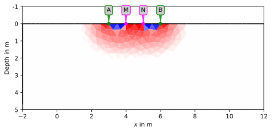


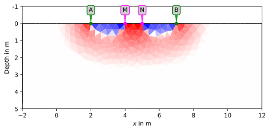


4.3 2D-Geoelektrik (Wenner-\(\beta\))


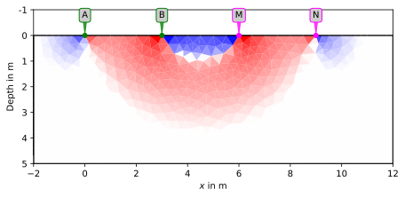

4.4 Beispiel: Modell

4.5 Stromverteilung homogener Fall

4.6 Beispiel: Strom & Potential

4.7 Beispiel: Pseudosektion

4.8 Beispiel: Untergrundmodell

4.9 Pseudosektion Wenner-Array
4.10 Pseudosektion Schlumberger-Array
4.11 Dipol-Dipol mit leitfähiger Einlagerung
4.12 Dipol-Dipol mit resistiver Einlagerung
5 Das pyGIMLi-Modul ERT
- Generierung von Datensätzen (Quadrupolanordnung)
- Berechnung von Geometriefaktoren analytisch oder numerisch
- Synthetische Simulation von Widerstandsverteilungen
- Daten-Import, -Filterung, Fehlerbestimmung
- 2D/3D-Inversion von Datensätzen
- Auswertung von Frequenz- und Zeitbereichs-IP-Daten
- Timelapse-Inversion von Monitoring-Daten
6 Das pyGIMLi-Modul VES
- Beliebige Anordnungen, typisch Schlumberger (AB/2, MN/2)
- Simulation beliebiger Schichtmodelle
- Auswertung von n-Schicht-Modellen (Widerstände & Mächtigkeiten)
- Auswertung glatter Verteilung (nur Widerstände)
6.1 Vergleich von Elektrodenanordnungen
| WA | WB | SL | DD | MG | |
|---|---|---|---|---|---|
| Signalstärke | H | M | M | L | H |
| Horizontale Auflösung | M | M | M | H | M |
| Vertikale Auflösung | L | L | M | L | M |
| Erkundungstiefe | H | H | M | L | L |
| Vertikale Sondierung | L | L | H | M | M |
| Kartierung | H | H | L | H | M |
(Wenner-\(\alpha\)/\(\beta\), Schlumberger, Dipol-dipol, Multi-gradient)
6.2 Beispiel: Modell
6.3 Beispiel: Pseudosektion
6.4 Beispiel: Untergrundmodell
6.5 Inversion


6.6 Inversion - Methodik
Datenvektor \(\vb d=\{d_i\}=\{\rho^a_i\}\), Modellvektor \(\vb m=\{m_j\}=\{\rho_j\}\)
Datenmisfit \(\vb \delta \vb d = \vb d - \vb f(\vb m)\) soll klein sein (Quadrate)
Modellveränderung \(\delta\vb m\) über Sensitivitätsmatrix \(S_{i,j}=\pdv{f_i(\vb m)}{m_j}=\pdv{\rho_a(\rho)}{\rho}\)
\[\Rightarrow \vb S \vb \delta \vb m = \delta \vb d\]
Least-SquaresLösung \(\vb S^T \vb S \delta \vb m=\vb S^T \delta \vb d\) +Zusatzterme –>